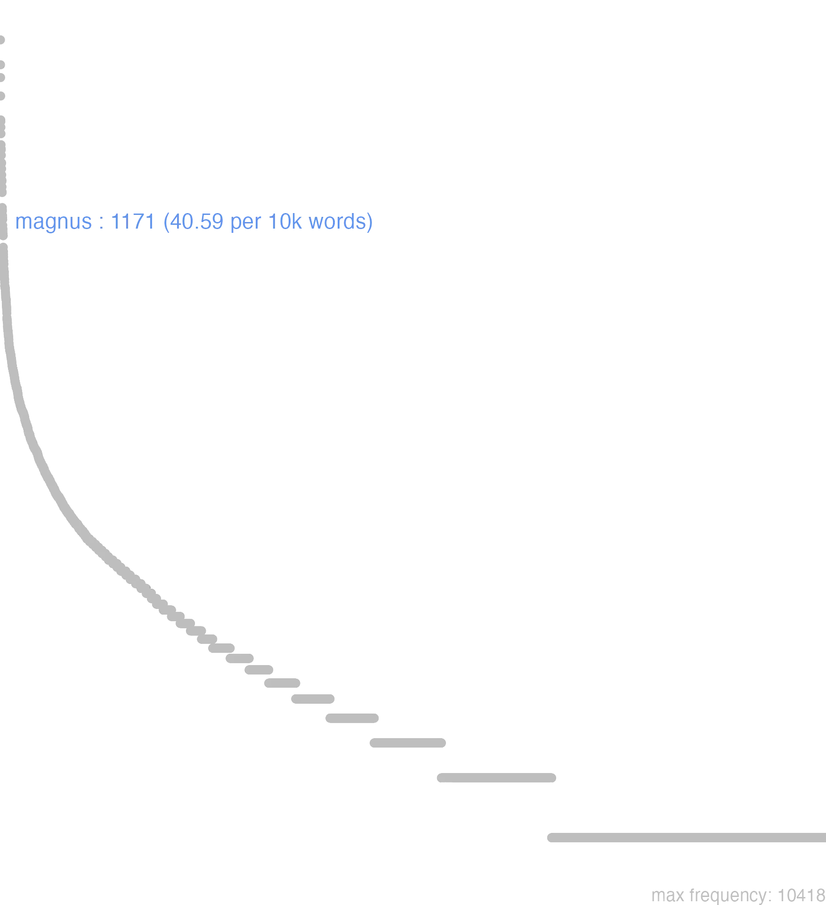

93 magnus
93.0.0.1 bases lexicais
id: http://lila-erc.eu/data/id/lemma/111319
classe: adjetivo
paradigma: 1ª classe (tema em -a/o-)
outras grafias:
variantes do lema:
no data
no data
no data
93.0.0.2 dicionários tradicionais
magnī
gen. de preço, v. magnus.
adj.
Obs.: Abl. e gen. de preço: magno, magni. Difere de grandis porque muitas vezes contém a ideia acessória de força, poder ou nobreza que grandis não designa.
subs. pr. m.
gen. de preço, v. magnus.
1 De grande valor, muito.
1 magnus -a -umadj.
Obs.: Abl. e gen. de preço: magno, magni. Difere de grandis porque muitas vezes contém a ideia acessória de força, poder ou nobreza que grandis não designa.
1 I-Sent. próprio Grande, elevado, vasto, abundante, espaçoso Cíc. Nat. 2, 17.
2 I-Daí Grande como quantidade Cíc. Verr. 2, 176.
3 I-Daí Grande como força, alto, forte tratando-se da voz Cíc. Caec. 92.
4 I-Daí Longo, de longa duração tratando-se de tempo Cíc. Nat. 2, 51.
5 II-Sent. figurado: Idoso:
6 II-Sent. figurado: Importante, considerável Cíc. Arch. 21.
7 II-Sent. figurado: Orgulhoso, soberbo sent. pejorativo:
[EXEMPLOS]
5
natu major Cíc. Tusc.1. 3 “mais idoso”
7
lingua magna Hor. O. 4. 6. 2 “língua orgulhosa”.
subs. pr. m.
1 Magno, epíteto de Pompeu e Alexandre.
no data
Magnus -a -um major maximus
1 Cic. grande, poderoso, illustre, excellente.
2 excessivo.
3 Virg. grande em número.
4 Juv. rico.
Magnus -a -um
1 cousa grande
Magnus -a um
1 cousa grande
93.0.0.3 dados de corpus
![This chart plots collocate by scoreSUBST, for the headword magnus here are all the values plotted: collocate: pars; scoreSUBST: 4. collocate: opus; scoreSUBST: 3. collocate: numerus; scoreSUBST: 3. collocate: copia; scoreSUBST: 3. collocate: uis; scoreSUBST: 2. collocate: cum; scoreSUBST: 0. collocate: res; scoreSUBST: 2. collocate: natu; scoreSUBST: 4. collocate: et; scoreSUBST: 0. collocate: que; scoreSUBST: 0. collocate: bonus; scoreSUBST: 0. collocate: in; scoreSUBST: 0. collocate: animus; scoreSUBST: 2. collocate: cura; scoreSUBST: 2. collocate: uir; scoreSUBST: 2. collocate: spes; scoreSUBST: 2. collocate: tam; scoreSUBST: 0. collocate: bellum; scoreSUBST: 2. collocate: qua; scoreSUBST: 0. collocate: periculum; scoreSUBST: 2. collocate: multitudo; scoreSUBST: 2. collocate: sine; scoreSUBST: 0. collocate: inter; scoreSUBST: 0. collocate: pontifex; scoreSUBST: 2. collocate: clamor; scoreSUBST: 2. collocate: pecunia; scoreSUBST: 2. collocate: uox; scoreSUBST: 2. collocate: auctoritas; scoreSUBST: 2. collocate: capio; scoreSUBST: 0. collocate: praemium; scoreSUBST: 2. collocate: pecus; scoreSUBST: 2. collocate: consto; scoreSUBST: 0. collocate: comparo; scoreSUBST: 0. collocate: multo; scoreSUBST: 0. collocate: impetus; scoreSUBST: 2. collocate: indicium; scoreSUBST: 2. collocate: aestimo; scoreSUBST: 0. collocate: potentia; scoreSUBST: 2. collocate: praeterea; scoreSUBST: 0. collocate: cursus; scoreSUBST: 2. collocate: usus; scoreSUBST: 2. collocate: templum; scoreSUBST: 2. collocate: timor; scoreSUBST: 2. collocate: dolor; scoreSUBST: 2. collocate: gratia; scoreSUBST: 2](./Media/wordcloud__xx109-97-103-110-117-115xx__BY_collocate_scoreSUBST.webp)
![This chart plots collocate by scoreADJ, for the headword magnus here are all the values plotted: collocate: pars; scoreADJ: 0. collocate: opus; scoreADJ: 0. collocate: numerus; scoreADJ: 0. collocate: copia; scoreADJ: 0. collocate: uis; scoreADJ: 0. collocate: cum; scoreADJ: 0. collocate: res; scoreADJ: 0. collocate: natu; scoreADJ: 0. collocate: et; scoreADJ: 0. collocate: que; scoreADJ: 0. collocate: bonus; scoreADJ: 2. collocate: in; scoreADJ: 0. collocate: animus; scoreADJ: 0. collocate: cura; scoreADJ: 0. collocate: uir; scoreADJ: 0. collocate: spes; scoreADJ: 0. collocate: tam; scoreADJ: 0. collocate: bellum; scoreADJ: 0. collocate: qua; scoreADJ: 0. collocate: periculum; scoreADJ: 0. collocate: multitudo; scoreADJ: 0. collocate: sine; scoreADJ: 0. collocate: inter; scoreADJ: 0. collocate: pontifex; scoreADJ: 0. collocate: clamor; scoreADJ: 0. collocate: pecunia; scoreADJ: 0. collocate: uox; scoreADJ: 0. collocate: auctoritas; scoreADJ: 0. collocate: capio; scoreADJ: 0. collocate: praemium; scoreADJ: 0. collocate: pecus; scoreADJ: 0. collocate: consto; scoreADJ: 0. collocate: comparo; scoreADJ: 0. collocate: multo; scoreADJ: 0. collocate: impetus; scoreADJ: 0. collocate: indicium; scoreADJ: 0. collocate: aestimo; scoreADJ: 0. collocate: potentia; scoreADJ: 0. collocate: praeterea; scoreADJ: 0. collocate: cursus; scoreADJ: 0. collocate: usus; scoreADJ: 0. collocate: templum; scoreADJ: 0. collocate: timor; scoreADJ: 0. collocate: dolor; scoreADJ: 0. collocate: gratia; scoreADJ: 0](./Media/wordcloud__xx109-97-103-110-117-115xx__BY_collocate_scoreADJ.webp)
![This chart plots collocate by scoreVERBO, for the headword magnus here are all the values plotted: collocate: pars; scoreVERBO: 0. collocate: opus; scoreVERBO: 0. collocate: numerus; scoreVERBO: 0. collocate: copia; scoreVERBO: 0. collocate: uis; scoreVERBO: 0. collocate: cum; scoreVERBO: 0. collocate: res; scoreVERBO: 0. collocate: natu; scoreVERBO: 0. collocate: et; scoreVERBO: 0. collocate: que; scoreVERBO: 0. collocate: bonus; scoreVERBO: 0. collocate: in; scoreVERBO: 0. collocate: animus; scoreVERBO: 0. collocate: cura; scoreVERBO: 0. collocate: uir; scoreVERBO: 0. collocate: spes; scoreVERBO: 0. collocate: tam; scoreVERBO: 0. collocate: bellum; scoreVERBO: 0. collocate: qua; scoreVERBO: 0. collocate: periculum; scoreVERBO: 0. collocate: multitudo; scoreVERBO: 0. collocate: sine; scoreVERBO: 0. collocate: inter; scoreVERBO: 0. collocate: pontifex; scoreVERBO: 0. collocate: clamor; scoreVERBO: 0. collocate: pecunia; scoreVERBO: 0. collocate: uox; scoreVERBO: 0. collocate: auctoritas; scoreVERBO: 0. collocate: capio; scoreVERBO: 2. collocate: praemium; scoreVERBO: 0. collocate: pecus; scoreVERBO: 0. collocate: consto; scoreVERBO: 2. collocate: comparo; scoreVERBO: 2. collocate: multo; scoreVERBO: 0. collocate: impetus; scoreVERBO: 0. collocate: indicium; scoreVERBO: 0. collocate: aestimo; scoreVERBO: 2. collocate: potentia; scoreVERBO: 0. collocate: praeterea; scoreVERBO: 0. collocate: cursus; scoreVERBO: 0. collocate: usus; scoreVERBO: 0. collocate: templum; scoreVERBO: 0. collocate: timor; scoreVERBO: 0. collocate: dolor; scoreVERBO: 0. collocate: gratia; scoreVERBO: 0](./Media/wordcloud__xx109-97-103-110-117-115xx__BY_collocate_scoreVERBO.webp)
![This chart plots collocate by scoreADV, for the headword magnus here are all the values plotted: collocate: pars; scoreADV: 0. collocate: opus; scoreADV: 0. collocate: numerus; scoreADV: 0. collocate: copia; scoreADV: 0. collocate: uis; scoreADV: 0. collocate: cum; scoreADV: 0. collocate: res; scoreADV: 0. collocate: natu; scoreADV: 0. collocate: et; scoreADV: 0. collocate: que; scoreADV: 0. collocate: bonus; scoreADV: 0. collocate: in; scoreADV: 0. collocate: animus; scoreADV: 0. collocate: cura; scoreADV: 0. collocate: uir; scoreADV: 0. collocate: spes; scoreADV: 0. collocate: tam; scoreADV: 2. collocate: bellum; scoreADV: 0. collocate: qua; scoreADV: 1. collocate: periculum; scoreADV: 0. collocate: multitudo; scoreADV: 0. collocate: sine; scoreADV: 0. collocate: inter; scoreADV: 0. collocate: pontifex; scoreADV: 0. collocate: clamor; scoreADV: 0. collocate: pecunia; scoreADV: 0. collocate: uox; scoreADV: 0. collocate: auctoritas; scoreADV: 0. collocate: capio; scoreADV: 0. collocate: praemium; scoreADV: 0. collocate: pecus; scoreADV: 0. collocate: consto; scoreADV: 0. collocate: comparo; scoreADV: 0. collocate: multo; scoreADV: 2. collocate: impetus; scoreADV: 0. collocate: indicium; scoreADV: 0. collocate: aestimo; scoreADV: 0. collocate: potentia; scoreADV: 0. collocate: praeterea; scoreADV: 2. collocate: cursus; scoreADV: 0. collocate: usus; scoreADV: 0. collocate: templum; scoreADV: 0. collocate: timor; scoreADV: 0. collocate: dolor; scoreADV: 0. collocate: gratia; scoreADV: 0](./Media/wordcloud__xx109-97-103-110-117-115xx__BY_collocate_scoreADV.webp)
![This chart plots collocate by scoreFUNC, for the headword magnus here are all the values plotted: collocate: pars; scoreFUNC: 0. collocate: opus; scoreFUNC: 0. collocate: numerus; scoreFUNC: 0. collocate: copia; scoreFUNC: 0. collocate: uis; scoreFUNC: 0. collocate: cum; scoreFUNC: 20. collocate: res; scoreFUNC: 0. collocate: natu; scoreFUNC: 0. collocate: et; scoreFUNC: 0. collocate: que; scoreFUNC: 0. collocate: bonus; scoreFUNC: 0. collocate: in; scoreFUNC: 10. collocate: animus; scoreFUNC: 0. collocate: cura; scoreFUNC: 0. collocate: uir; scoreFUNC: 0. collocate: spes; scoreFUNC: 0. collocate: tam; scoreFUNC: 0. collocate: bellum; scoreFUNC: 0. collocate: qua; scoreFUNC: 0. collocate: periculum; scoreFUNC: 0. collocate: multitudo; scoreFUNC: 0. collocate: sine; scoreFUNC: 20. collocate: inter; scoreFUNC: 20. collocate: pontifex; scoreFUNC: 0. collocate: clamor; scoreFUNC: 0. collocate: pecunia; scoreFUNC: 0. collocate: uox; scoreFUNC: 0. collocate: auctoritas; scoreFUNC: 0. collocate: capio; scoreFUNC: 0. collocate: praemium; scoreFUNC: 0. collocate: pecus; scoreFUNC: 0. collocate: consto; scoreFUNC: 0. collocate: comparo; scoreFUNC: 0. collocate: multo; scoreFUNC: 0. collocate: impetus; scoreFUNC: 0. collocate: indicium; scoreFUNC: 0. collocate: aestimo; scoreFUNC: 0. collocate: potentia; scoreFUNC: 0. collocate: praeterea; scoreFUNC: 0. collocate: cursus; scoreFUNC: 0. collocate: usus; scoreFUNC: 0. collocate: templum; scoreFUNC: 0. collocate: timor; scoreFUNC: 0. collocate: dolor; scoreFUNC: 0. collocate: gratia; scoreFUNC: 0](./Media/wordcloud__xx109-97-103-110-117-115xx__BY_collocate_scoreFUNC.webp)
![This charts plots the frequency of lemma by author_Frequencies. The Suetonius subcorpus registers the highest normalized frequency, with the value of 77.18 and an absolute frequency of 7. The Sallustius subcorpus follows, with a normalized frequency of 72.35 and an absolute frequency of 78. the subcorpus with the least normalized frequency is Ovidius with the normalized value of 15.44 and an absolute freqeuncy of 9. here are all the values: subcorpus: Caesar ; normalized frequency: 161 ; absolute frequency: 60.8051967671274. subcorpus: Cicero ; normalized frequency: 567 ; absolute frequency: 35.3218210361067. subcorpus: Horatius ; normalized frequency: 54 ; absolute frequency: 47.9531125122103. subcorpus: Ovidius ; normalized frequency: 9 ; absolute frequency: 15.442690459849. subcorpus: Phaedrus ; normalized frequency: 14 ; absolute frequency: 21.2539851222104. subcorpus: Sallustius ; normalized frequency: 78 ; absolute frequency: 72.3495037566089. subcorpus: Seneca ; normalized frequency: 234 ; absolute frequency: 43.6721972340942. subcorpus: Suetonius ; normalized frequency: 7 ; absolute frequency: 77.1775082690187. subcorpus: Tacitus ; normalized frequency: 12 ; absolute frequency: 41.1946446961895. subcorpus: Vergilius ; normalized frequency: 23 ; absolute frequency: 44.4015444015444. subcorpus: Hieronymus ; normalized frequency: 12 ; absolute frequency: 26.9602336553583](./Media/barchart__xx109-97-103-110-117-115xx__lemma_BY_author_Frequencies.webp)
![This charts plots the frequency of lemma by genre_Frequencies. The Prosa.histórica subcorpus registers the highest normalized frequency, with the value of 62.81 and an absolute frequency of 258. The Prosa.epistolográfica subcorpus follows, with a normalized frequency of 27.82 and an absolute frequency of 105. the subcorpus with the least normalized frequency is Poesia.didática with the normalized value of 19.51 and an absolute freqeuncy of 23. here are all the values: subcorpus: Prosa.histórica ; normalized frequency: 258 ; absolute frequency: 62.8058131892208. subcorpus: Prosa.filosófica ; normalized frequency: 264 ; absolute frequency: 43.4918699856674. subcorpus: Prosa.oratória ; normalized frequency: 391 ; absolute frequency: 37.5409253694085. subcorpus: Prosa.epistolográfica ; normalized frequency: 105 ; absolute frequency: 27.8226768064867. subcorpus: Poesia.lírica ; normalized frequency: 54 ; absolute frequency: 45.4277782451418. subcorpus: Poesia.didática ; normalized frequency: 23 ; absolute frequency: 19.5097124438035. subcorpus: Poesia.trágica ; normalized frequency: 41 ; absolute frequency: 35.6150104239055. subcorpus: Poesia.épica ; normalized frequency: 23 ; absolute frequency: 44.4015444015444. subcorpus: Prosa.ficcional ; normalized frequency: 12 ; absolute frequency: 26.9602336553583](./Media/barchart__xx109-97-103-110-117-115xx__lemma_BY_genre_Frequencies.webp)
![This charts plots the frequency of lemma by period_Frequencies. The II.d.C. subcorpus registers the highest normalized frequency, with the value of 49.74 and an absolute frequency of 19. The I.a.C. subcorpus follows, with a normalized frequency of 41.1 and an absolute frequency of 883. the subcorpus with the least normalized frequency is IV.d.C. with the normalized value of 26.96 and an absolute freqeuncy of 12. here are all the values: subcorpus: I.a.C. ; normalized frequency: 883 ; absolute frequency: 41.0984407726321. subcorpus: I.d.C. ; normalized frequency: 257 ; absolute frequency: 39.3146703380756. subcorpus: II.d.C. ; normalized frequency: 19 ; absolute frequency: 49.738219895288. subcorpus: IV.d.C. ; normalized frequency: 12 ; absolute frequency: 26.9602336553583](./Media/barchart__xx109-97-103-110-117-115xx__lemma_BY_period_Frequencies.webp)
cetera in magnis rebus
Cic.Att.2.19.1
O resto nos grandes assuntos. [JDD]
tam magnas spes relinquam
Sen.Ep.22.9
Abandonarei tão grandes esperanças? [JDD]
magnam partem oneris sui posuit
Sen.Ep.26.2
pôs de lado grande parte de sua carga. [JDD]
et clamans voce magna dicit
Vulg.Marc.5.7
e clamando em alta voz, diz. [JDD]
eos concludit magnam hominum multitudinem
Cic.Ver.2.4.54.9
Encerra-os: uma grande multidão de homens. [JDD]
paruo fames constat magno fastidium
Sen.Ep.17.4
a fome custa pouco, caro é o fastio. [JDD]
curam perempti maior excussit timor
Sen.Oed.244
Um temor maior afugentou a preocupação com o assassinato. [JDD]
est res sane magni consili
Cic.Att.2.3.3
É, sem dúvida, uma coisa de grande reflexão. [JDD]
magnus undique numerus celeriter conuenit
Caes.Gal.6.34.9
De toda parte veio juntar-se rapidamente um grande número. [JDD]
Terentia magnos articulorum dolores habet
Cic.Att.1.5.8
Terência está com fortes dores nas articulações. [JDD]
quanto in odio noster amicus Magnus
Cic.Att.2.13.2
Em que grande ódio se acha o nosso Magno! [JDD, de outra edição]
animus sed hic rectus bonus magnus
Sen.Ep.31.11
O espírito, mas sendo este reto, bom, grande. [JDD]
pecudibus istas maiores ferisque natura concessit
Sen.Ep.124.22
A natureza as concedeu maiores aos gados e às feras. [JDD]
Magnae periclo sunt opes obnoxiae .
Phaed.2.7
as grandes riquezas estão sujeitas ao perigo. [JDD]
multo haec inquam nostra res maior
Cic.Att.1.16.5
este meu caso, eu garanto, foi muito maior. [JDD]
Magnis clamoribus adflictus conticuit et concidit
Cic.Att.1.16.10
Acabrunhado por grandes gritarias, calou-se e se sentou. [JDD]
quae res magno usui nostris fuit
Caes.Gal.4.25.1
coisa que foi de grande utilidade para os nossos. [JDD]
tamen magno timore sum sed bene speramus
Cic.Att.5.14.2
contudo, estou em grande temor, mas esperamos o melhor. [JDD]
maxima est enim uis uetustatis et consuetudinis
Cic.Amici.68
pois é muito grande a força da antiguidade e do costume. [JDD]
ego vivo miserrimus et maximo dolore conficior
Cic.Att.3.5
Eu vivo na maior desgraça e sou consumido por profunda dor. [JDD]
etenim γεωγραφικὰ quae constitueram magnum opus est
Cic.Att.2.6.1
A verdade é que a geografia que eu tinha empreendido é uma obra grande. [JDD]
id est maximum et miserrimum mearum omnium miseriarum
Cic.Att.3.7.3
Essa é a maior e mais desgraçada de todas as minhas desgraças. [JDD]
et timuerunt magno timore et dicebant ad alterutrum
Vulg.Marc.4.40
E eles sentiram um grande medo e diziam uns aos outros. [JDD]
Magno inquit in periclo sunt nati tui ;
Phaed.2.4
“Teus filhos estão em grande perigo”, diz. [JDD]
sed maximum est in amicitia parem esse inferiori
Cic.Amici.69
Mas, na amizade, é muito importante ser igual ao inferior. [JDD]
nullum enim dolorem longum esse qui magnus est
Sen.Ep.30.14
Pois não é longa nenhum dor que é intensa. [JDD]
id ex itinere magno impetu Belgae oppugnare coeperunt
Caes.Gal.2.6.1
Os belgas de passagem começaram a atacá-la com grande ímpeto. [JDD]
hodie vero hiemant in Cyrrhestica maximumque bellum impendet
Cic.Att.5.21.2
de fato, hoje eles passam o inverno em Cirréstica e uma grande guerra está iminente. [JDD]
non sine magno quidem rei publicae prouinciaeque Siciliae detrimento
Cic.Ver.2.4.20.7
Na verdade, não sem um grande dano à república e à província da Sicília. [JDD]
palus erat non magna inter nostrum atque hostium exercitum
Caes.Gal.2.9.1
Havia entre o nosso exército e o dos inimigos um charco não grande. [JDD]
magna pax Antonio cum eis his item cum illo
Cic.Phil.7.23.9
Grande paz de Antônio com eles e igualmente deles com ele. [JDD]
sic ignis non refert quam magnus sed quo incidat
Sen.Ep.18.15
Assim como o fogo, não interessa quão grande seja, mas onde incida. [JDD]
et cetera magno cum fremitu et clamore sunt dicta
Cic.Att.2.19.3
e demais coisas foram ditas com grande frêmito e clamor. [JDD]
magnus dicendi labor magna res magna dignitas summa autem gratia
Cic.Mur.29
Grande é o labor de discursar, grande seu assunto, grande sua dignidade, suprema, porém, a sua influência. [JDD]
sed in magna copia rerum aliud alii natura iter ostendit
Sal.Cat.3.1
Mas em meio a uma grande abundância de coisas a natureza mostra um caminho para um e outro para outro. [JDD]
hic a. d. iii Idus Octobr magnum numerum hostium occidimus
Cic.Att.5.20.3
Aqui, no terceiro dia antes dos idos de outubro [13 de outubro], matamos um grande número de inimigos. [JDD, de outra edição]
civitates locupletes ne in hiberna milites reciperent magnas pecunias dabant
Cic.Att.5.21.7
As cidades ricas, para não receberem os soldados nos quartéis de inverno, davam grandes somas de dinheiro. [JDD]
magna uis est magnum numen unum et idem sentientis senatus
Cic.Phil.3.32.9
É uma grande força, um grande poder uma mesma e única opinião do senado. [JDD]
Gracchorum potentiam maiorem fuisse arbitramini quam huius gladiatoris futura sit
Cic.Phil.7.17.4
Julgais que o poder dos Gracos tenha sido maior do que será o desse gladiador? [JDD]
unum reprehendo quod otium nuntiari e Gallia non magno opere gaudet
Cic.Att.1.20.5
só lhe critico uma coisa: não se alegra muito que a paz na Gália seja anunciada. [JDD, de outra edição]
nota atque instituta ratione magno militum studio paucis diebus opus efficitur
Caes.Gal.6.9.4
Conhecido e definido o seu método, em poucos dias, com o empenho dos soldados, a obra é concluída. [JDD]
itaque re frumentaria quam celerrime potuit comparata magnis itineribus ad Ariouistum contendit
Caes.Gal.1.37.5
E assim providenciada o mais rapidamente possível uma provisão de trigo, dirige-se a grandes marchas na direção de Ariovisto. [JDD]
quorum aduentu magna cum auctoritate et magna cum hominum multitudine bellum gerere conantur
Caes.Gal.3.23.4
Com a chegada destes, tentam fazer a guerra com grande autoridade e com grande multidão de homens. [JDD]
hanc ego causam patres conscripti quo minus nouom consilium capiamus in primis magnam puto
Sal.Cat.51.41
Esse motivo, pais conscritos, eu julgo acima de tudo importante para que não tomemos uma decisão sem precedentes. [JDD]
magnus uir es sed unde scio si tibi fortuna non dat facultatem exhibendae uirtutis
Sen.Prov.4.2
És um grande homem? Mas como sei, se a fortuna não te dá oportunidade de exibir o teu valor? [JDD]
cum uos considero milites et cum facta uostra aestumo magna me spes uictoriae tenet
Sal.Cat.58.18
Quando vos considero, soldados, e quando avalio os vosso feitos, uma grande esperança de vitória se apodera de mim. [JDD, de outra edição]
neque multum frumento sed maximam partem lacte atque pecore uiuunt multumque sunt in uenationibus
Caes.Gal.4.1.8
Não vivem muito do trigo, mas quase que totalmente do leite e do gado e são muito dados à caça. [JDD]
huic magnis praemiis pollicitationibusque persuadet uti ad hostes transeat et quid fieri uelit edocet
Caes.Gal.3.18.2
Persuade este com grandes recompensas e promessas a que passe para os inimigos e lhes ensine o que queria que fosse feito. [JDD]
magnus gubernator et scisso nauigat uelo et si exarmauit tamen reliquias nauigii aptat ad cursum
Sen.Ep.30.3
Um grande piloto navega com a vela rasgada e, se, contudo, perdeu os seus aprestos, ajusta os restos da embarcação para a travessia. [JDD]
cum Hortensius veniret et infirmus et tam longe et Hortensius cum maxima praeterea multitudo ille non venit
Cic.Att.5.2.2
Depois de Hortênsio ter vindo e enfermo e de tão longe, e Hortênsio! além disso depois de ter vindo a maior multidão, ele não veio?” [JDD, de outra edição]
93.0.0.4 Diagrama de Zipf
